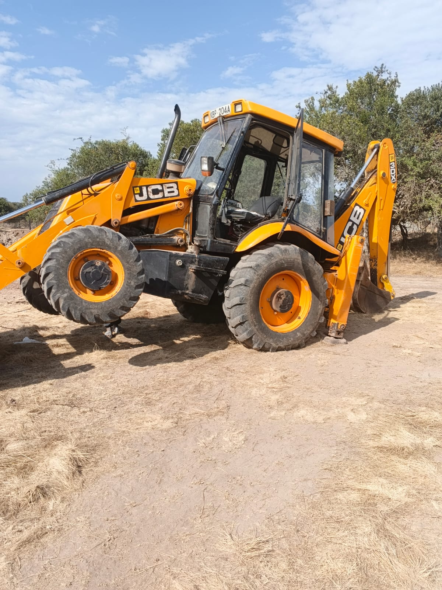

Mucheru World of Golf
Field operations at Mucheru World of Golf, overseen by Mr. Gichuhi and Ken, focused on multi-front course development encompassing championship teebox earthmoving, subsurface green drainage installation, water distribution logistics, aerial orthomosaic drone survey mapping, boundary landscaping, and video progress documentation:
- Shaping of Teeboxes No. 11 & 13: Ground earthmoving crews initiated rough shaping and elevation grading across Championship Teebox No. 11 and Teebox No. 13. The Backhoe Loader spread dumped subsoil piles, leveling uneven contours to establish true base elevations prior to top-dressing.
- Covering Drainage Pipes with Geotextile Netting: Ground teams enveloped perforated PVC drainage pipes and branch tee junctions within heavy-duty geotextile filter netting to prevent silt infiltration while preserving subterranean percolation.
- Covering Drainage Pipes with Ballast Stone Bed: Angular crushed ballast was shoveled from stockpiles into wheelbarrows and backfilled over netted drainage pipes across green trenches, securing conduits and creating a porous drainage prism.
- Orthomosaic Aerial Drone Mapping Survey (DeKUT): An aerial drone survey was conducted across the course in collaboration with Mr. Dennis from Dedan Kimathi University of Technology (DeKUT) for orthomosaic mapping. Three (3) automated flight trips were completed; data processing is underway, and files will be shared upon completion.
- Preparation of Irrigation System & Perimeter Hedge Planting: Crews advanced groundwork along the perimeter wire fence, clearing planting trenches and excavating holes for boundary hedges in tandem with lateral water line route preparation.
- Delivery of Water Distribution System Pipes Completed: Bulk delivery of heavy-duty black HDPE coiled and straight pipes was completed and offloaded. Pipe bundles were safely staged under tree canopy adjacent to the access corridor.
- JCB Backhoe Loader Mechanical Breakdown: Shift productivity was curtailed to 2 hours and 50 minutes due to an unexpected mechanical breakdown. The tractor was elevated on its hydraulic stabilizers for troubleshooting and component repairs.
Key Accomplishments — Mucheru World of Golf
Successfully advanced Teeboxes 11 & 13 rough shaping, completed geotextile net wrapping over PVC drainage lines, initiated ballast stone backfill across green trenches, received 100% of water distribution pipes on site, completed 3 aerial drone mapping route flights with DeKUT for orthomosaic generation, progressed boundary hedge planting preparation, and published full daily operational progress video to YouTube.
Operational shift breakdown and utilization billing for earthmoving machinery deployed at Mucheru World of Golf. In accordance with standard operating procedures, Front Loader and Backhoe functions are consolidated under a single machine entry:
| Equipment Description | Primary Site Operations | Operating Time | Effective Rate | Total Cost (KES) |
|---|---|---|---|---|
| Backhoe Loader (JCB 3DX) Reg: KBP 204A • Front Loader Bucket |
Rough shaping of Championship Teebox No. 11 and Teebox No. 13; spreading and grading surrounding excavated soil spoil piles (shift curtailed by mechanical failure). | 2h 50m (2.83 hrs) |
KES 6,500 / hr | KES 18,395 |
| Consolidated Machinery Billing Total | 2h 50m | — | KES 18,395 | |
Mechanical Breakdown Incident & Equipment Status
The JCB Backhoe Loader (KBP 204A) experienced a mechanical breakdown after completing 2 hours and 50 minutes of earthmoving, limiting teebox shaping productivity. The tractor was elevated on its front loader bucket and rear hydraulic outriggers for technical inspection, hydraulic diagnosis, and required component servicing to restore full operational availability.
Field video documentation capturing comprehensive daily course progress on YouTube, boundary hedge planting preparation along the perimeter fence, and manual ballast stone application over the golf green drainage trench network:
🎥 Mucheru World of Golf — Daily Operations & Course Progress
Comprehensive field progress video capturing September 7 operations at Mucheru World of Golf, showcasing teebox rough shaping (Teeboxes 11 & 13), geotextile drainage filter netting, and ballast stone bedding over green trenches.
🎥 Perimeter Hedge Planting & Ground Preparation
Field footage showing manual labor crews excavating hedge planting trenches and preparing irrigation routing alongside the boundary wire mesh fence.
🎥 Ballast Stone Application Over Drainage Pipes
Operational recording documenting field personnel carefully shoveling and packing clean ballast stone over the perforated PVC drainage network within the green base.
Comprehensive photographic records documenting teebox earthmoving, geotextile net installation, ballast stone infill, boundary irrigation preparation, pipe delivery, and equipment maintenance:

Teebox Earthmoving — Shaping Spoil Mounds
Yellow JCB Backhoe Loader cutting into large mounds of excavated red soil to shape elevations across Teeboxes No. 11 and 13 under Ken's supervision.

Geotextile Net Wrapping Over Drainage Pipes
Workers wrapping porous green geotextile filter netting around perforated orange PVC drainage pipe junctions to prevent silt ingress while maintaining flow.

Ballast Stone Bedding Over Green Drainage Trench
Clean angular ballast stone backfilled directly over drainage pipes in the central trench across the hardcore rock foundation grid of the golf green.

Ballast Stone Stockpile Haulage & Wheelbarrows
Labor crew actively shoveling crushed ballast stone from the bulk supply mound into wheelbarrows for distribution into green foundation trenches.

Boundary Hedge Planting & Irrigation Trenching
Ground workforce excavating planting trenches along the property perimeter wire fence in preparation for boundary hedges and water supply lines.

Delivery & Staging of Water System HDPE Pipes
Delivered inventory of black HDPE irrigation coils and piping organized and staged under shaded tree canopy ready for field installation.

JCB Backhoe Loader Mechanical Troubleshooting
JCB 3DX tractor elevated on front loader bucket and rear outriggers for undercarriage inspection following reported mechanical breakdown.

Orthomosaic Drone Survey — DeKUT Flight Launch
Mr. Dennis from DeKUT operating the flight controller and preparing the survey drone on the takeoff pad prior to executing 3 automated mapping route trips.

Aerial Drone Survey — Ballast Infill Across Green Grid
High-altitude orthophoto showing completed ballast stone application over drainage trenches dividing hand-packed hardcore rock sectors.

Overhead View — Ongoing Ballast Bedding Distribution
Circular green foundation showing trenches on the western half bedded with ballast while eastern conduits await remaining stone infill.
Chaka Farms
Daily operations at Chaka Farms advanced on multiple operational fronts encompassing large-scale agricultural land preparation, strict livestock dairy accounting, working canine care, and estate grounds hygiene:
- Silage Maize Land Ploughing (In Progress): Overseen by Kinoti, mechanized tractor ploughing commenced across the dedicated agricultural fields. The tractor operated continuously turning over compacted earth, breaking subsoil clods, and creating deep, aerated furrows in preparation for upcoming silage maize planting to secure high-nutrient livestock feed reserves.
- Dairy Milk Yield Accounting: Milking operations overseen by Kamandau recorded a total gross cow milk production of 6.5 Litres, comprising 4.5 Litres during the morning session and 2.0 Litres during the evening session.
- Strict Milk Disbursements & Deductions: In accordance with farm ration policy, deductions totaling 2.0 Litres were drawn out of gross yield: 1.0 Litre allocated to goat kids (0.5L morning + 0.5L evening), 0.5 Litres allocated to Gladys, and 0.5 Litres allocated to Kamau.
- Net Remaining Farm Milk Balance: After accounting for all authorized disbursements, the net farm balance stood firmly at 4.5 Litres.
- Canine Unit Feeding, Kennel Hygiene & Leashed Exercise: Overseen by Mwangi, attentive daily care was provided to the Chaka Farms working canine unit. Nutritious dietary meals were cooked and fed to the dogs, comprehensive kennel enclosure cleaning and sanitation was executed, and disciplined on-leash walking exercises were conducted across the estate grounds.
- Compound Cleanliness & Farm Sanitation: Monica and Margaret supervised routine sweeping and hygiene across all central corridors, livestock barn perimeters, and common farm pathways, keeping grounds tidy and free of organic waste.
Chaka Farms Operational Summary
Silage maize field ploughing advancing smoothly under Kinoti's oversight to prepare seedbeds; dairy milking yielded 6.5 Litres gross with 4.5 Litres net farm balance preserved; canine unit fed with cooked meals, kennels cleaned, and dogs exercised on leash under Mwangi; and comprehensive estate sanitation maintained.
Quantitative daily milk production log recorded strictly in Litres (L). Allocations to goat kids and staff represent disbursements drawn out of gross yield:
| Item / Description | Morning (L) | Evening (L) | Total (L) | Deduction (L) | Farm Balance (L) |
|---|---|---|---|---|---|
| Cow Milking Yield (Gross Production) | 4.5 L | 2.0 L | 6.5 L | — | 6.5 L |
| Goat Kids Ration | 0.5 L | 0.5 L | 1.0 L | - 1.0 L | — |
| Staff Allocation — Gladys | — | — | 0.5 L | - 0.5 L | — |
| Staff Allocation — Kamau | — | — | 0.5 L | - 0.5 L | — |
| Net Farm Milk Balance | 4.5 L Morning | 2.0 L Evening | 6.5 L Gross | - 2.0 L Total Deductions | 4.5 L Net |
Production & Allocation Reconciliation
Total gross milk yield was 6.5 Litres (4.5L morning + 2.0L evening). Following disbursements of 1.0 Litre to goat kids (0.5L morning + 0.5L evening), 0.5 Litres to Gladys, and 0.5 Litres to Kamau, total allocations deducted equaled 2.0 Litres, leaving an exact net remaining farm balance of 4.5 Litres.
Field operational recordings capturing disc ploughing operations across the agricultural fields at Chaka Farms in preparation for silage maize planting:
🎥 Tractor Ploughing — Primary Furrow Pass
Field footage documenting tractor disc ploughing turning over fertile topsoil across Chaka Farms acreage under Kinoti's direction.
🎥 Acreage Tillage — Furrow Alignment & Depth
Operational recording showing sustained ploughing passes breaking through stubborn roots and ensuring uniform furrow depth across the plot.
🎥 Deep Soil Inversion for Maize Silage Planting
Close-up view of disc blades cutting, lifting, and inverting deep soil tilth to optimize moisture retention and seedbed aeration.
Comprehensive working canine care, nutritional meal preparation, daily kennel hygiene, and controlled leash exercise were conducted across the Chaka Farms Canine Unit under Mwangi's supervision:
- Nutritional Meal Preparation (Cooked for the Dogs): Mwangi prepared and cooked fresh, wholesome dietary meals for the working canine pack, ensuring balanced nutrition, optimal vitality, and consistent daily feeding schedules.
- Kennel Cleaning & Facility Sanitation: Conducted thorough cleaning, sweeping, washing, and sanitization across all kennel enclosures, sleeping quarters, and runs, eliminating debris and maintaining high sanitary standards.
- Walking on Leash & Behavioral Exercise: Led the canine unit on structured walking routines on leash across farm paddocks and estate access roads, reinforcing leash etiquette, handler focus, impulse control, and daily physical conditioning.
Canine Care & Conditioning Accomplishment
Fresh cooked meals prepared and fed, kennel facilities thoroughly cleaned and sanitized, and structured on-leash walking completed under Mwangi's oversight.
Compound cleanliness and routine sanitation tasks were carried out systematically across the farm facility:
- General Compound Cleanliness: Monica and Margaret supervised comprehensive sweeping, litter removal, and sanitation across all central compound corridors, storage perimeters, and livestock yard borders.
- Farmyard Maintenance: Pathways and outdoor work areas were cleared of organic waste and debris, ensuring high hygiene and orderly access across farm facilities.
Facility Hygiene Status
Farm compound swept, pathways cleared of organic debris, and operational zones maintained in clean condition.
Kabete Residence
Major civil works, landscape grading, electrical maintenance, and domestic pet care advanced at Kabete Residence, with operations overseen and field updates shared by Njoki:
- Outdoor Fireplace Demolition & Ground-Level Clearance (In Progress): Demolition crews in reflective safety vests advanced ground-level clearing and excavation at the sunken outdoor fireplace terrace. Heavy masonry stone blocks were systematically sorted into organized rubble stacks, excavated red earth was removed from the terrace bank, and tree roots and stumps were cleared to expose the subgrade.
- Clearance of Storage Tank Soil at Playground: Ground personnel tackled the large mound of rich red subsoil excavated from the main water storage tank foundation located at the playground. Workers shoveled the soil into heavy-duty sacks for transfer to garden turf areas.
- Red Soil Transport, Spreading & Turf Leveling: Sacks of red soil were carried from the playground to the lawn areas and deposited in strategic mounds across the grass. Crews began spreading and leveling the topsoil across the lawn turf and beneath the outdoor daybed swing structure to improve grading and top-dress the grass.
- Electrical Fixture Upgrades & Maintenance: Replaced faulty electrical sockets and mounted a new dual switched socket outlet featuring dual USB charging ports beneath the guest house kitchen cabinet; progressed additional residential power socket installations; replaced faulty ceiling lighting at the private office adjacent to the library; and successfully completed installation and testing of the recessed square ceiling LED fixture in the server room.
- Domestic Pet Care & Exercise: Attentive care was provided to resident pets at Kabete Residence. Ajabu the Golden Retriever was taken on his guided leashed exercise walk along the paved estate driveways and lawn verges, later enjoying his evening dinner from his bowl on the veranda tiles. Resident cats Mocha, Reo, and Aiko were fed their evening meals side-by-side from stainless steel bowls indoors.
Key Accomplishments — Kabete Residence
Fireplace ground-level masonry rubble sorted and subgrade cleared; playground storage tank soil cleared, bagged, and spread for lawn leveling; guest house kitchen dual USB socket and server room LED lighting installed; and comprehensive pet care completed.
Photographic documentation capturing fireplace ground-level demolition and rubble clearance, storage tank soil bagging, lawn soil spreading and leveling, electrical fixture replacements, and domestic pet care:

Fireplace Ground Level Demolition & Excavation
High-angle view of the outdoor fireplace site showing workers in neon vests excavating red earth, sorting demolished building stones, and clearing the lower terrace.

Masonry Rubble Sorting & Clearance
Worker shoveling and stacking heavy building stones and concrete fragments generated from structural demolition alongside the fireplace retaining wall.

Terrace Bank Trimming & Root Clearing
Excavation of the red soil embankment at the fireplace zone showing cleared tree roots, stump removal, and prepared subgrade adjacent to the fence.

Playground Storage Tank Soil Bagging
Workers shoveling excavated red earth from the storage tank foundation into sacks at the playground area for transfer to the lawn.

Transporting Bagged Red Soil to Lawn
Personnel carrying heavy sacks of excavated red soil from the playground and depositing them along the stone-bordered garden grass verge.

Distributing Topsoil Along Garden Perimeter
Ground crews unloading and placing soil sacks in preparation for top-dressing and leveling the residential lawn turf.

Evenly Spaced Soil Mounds on Turf
Multiple mounds of rich red topsoil distributed across the grass lawn ready for rake spreading and grading.

Lawn Top-Dressing & Soil Distribution
Wide perspective of the garden lawn and stone flag walkway showing red soil heaps laid out around the outdoor daybed swing.

Red Soil Spreading & Turf Leveling
Even layer of red topsoil spread and leveled over lawn turf and beneath the outdoor bench canopy to improve surface grading.

Power Socket Installation & Wiring
Exposed electrical conductors and new dual switched socket faceplate with integrated USB charging ports during installation.

Guest House Kitchen Socket Replacement
Testing and securing the newly installed dual switched socket outlet with dual USB ports mounted beneath the kitchen cabinet.

Office Ceiling Light Wiring & Bulb Replacement
Technician connecting and taping ceiling fixture wiring during replacement of the faulty light in the office adjacent to the library.

Server Room LED Light Replacement Complete
Square recessed ceiling LED panel illuminated and fully operational following completed replacement in the server room.

Ajabu Leashed Walk — Paved Driveway
Ajabu the Golden Retriever on leash during his routine exercise walk along the red interlocking driveway pavers at Kabete Residence.
.jpeg)
Ajabu Exploring Estate Grounds
Ajabu inspecting garden borders and shaded foliage along the walkway under attentive handler care.
.jpeg)
Ajabu on Herringbone Brick Walkway
Ajabu paused on the brick pathway during his afternoon stroll, displaying healthy coat and calm demeanor.

Estate Walk Along Perimeter Wall
Ajabu walking calmly along the paved driveway bordered by manicured lawn and residential perimeter wall.
.jpeg)
Patio Paver Exercise Walk
Ajabu continuing his daily walk along patterned patio pavers, maintaining consistent exercise routine.

Ajabu Evening Meal on Veranda
Ajabu eating his evening dinner from his dedicated feeding bowl on the red tiled veranda floor at Kabete Residence.

Resident Cats Dining Indoors
Resident cats Mocha, Reo, and Aiko eating their evening meals side-by-side from stainless steel bowls indoors at Kabete Residence.
Amani Cottage
Comprehensive landscape grounds maintenance, turf irrigation, pathway sanitation, and detailed garden upkeep were carried out at Amani Cottage:
- Estate Grounds & Lawn Irrigation: Edwin conducted thorough sprinkler and hose irrigation across established turf areas, lawn sections, and garden borders, ensuring deep root hydration to sustain lush green vitality.
- Compound Sweeping & Litter Removal: Complete compound sweeping was executed across stone pathways, cottage verandas, driveway approaches, and lawn perimeters, removing all fallen foliage and organic waste.
- Flower Bed Weeding: Ground personnel performed systematic manual weeding throughout ornamental flower beds, eliminating competing weeds and aerating soil around mature flowering plants.
- Rockery Landscaping Maintenance: Detailed maintenance was performed across the estate rockery, clearing stray leaves from rock arrangements, grooming low-lying groundcover, and maintaining crisp borders around decorative stonework.
Grounds & Landscape Summary
Lawn and flower beds fully irrigated, estate compound swept clean of litter, ornamental beds thoroughly weeded, and rockery stonework meticulously maintained.
Honi Property
A security and safety incident was logged regarding the project's external landholding at Honi Property:
- Fire Incident Occurrence: A localized fire incident was reported on Honi property. The fire broke out across open grassland and dried scrub vegetation along the perimeter boundary line.
- Affected Acreage & Damage Assessment: A small portion of the property grounds was burnt. Ground inspection confirmed that surface grass and perimeter undergrowth were scorched down to an ash layer, while wooden boundary fence posts sustained surface scorching without total structural compromise.
- Source & Cause of Fire Unknown: The exact origin and trigger of the fire remain unknown at this time. No active external construction or burning activities were authorized on the parcel.
- Perimeter Security & Vigilance: Field personnel inspected the extinguished fire zone to confirm that all embers were fully subdued. Continued monitoring has been established to ensure perimeter boundary integrity and guard against potential reignition during dry weather conditions.
Security Notice & Ongoing Fire Investigation
A small portion of Honi property was burnt in an isolated fire incident of unknown origin. While the fire is contained and out, site management is conducting inquiries and maintaining perimeter surveillance to protect property assets.
On-site video recording capturing the burnt perimeter sector, ash layer, and boundary condition at Honi Property:
🎥 Honi Property — Fire Incident & Boundary Area Footage
Field assessment video capturing the scorched ground, burnt grass cover, and boundary fence posts along the affected section of Honi Property.
Visual photographic evidence documenting the affected perimeter sector and scorched vegetation at Honi Property:

Honi Property — Scorched Ground & Boundary Fence
Inspection photograph displaying the scorched terrain, white ash deposits, and surface-charred wooden perimeter fence posts following the localized fire incident.